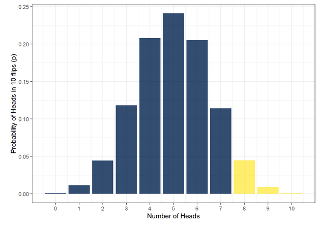
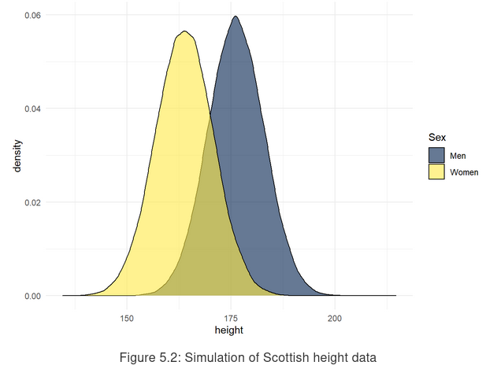

Review
Dale Barr
Psychology, University of Glasgow
Created: 2021-05-08 Sat 08:21
R/RStudio
- R is not RStudio
batch mode
Rscript script.R Rscript -e 'rmarkdown::render("report.Rmd")'- structure:
- load packages, define functions, import data, etc.
- use relative not absolute paths
read_csv("data/trials.csv")✓read_csv("/Users/dale/trials.csv")❌
R/RStudio
- getting help
- use built-in help before googling
?functionname - don’t forget: cheatsheets!
- use built-in help before googling
Data Wrangling and Data Visualization
- Principles of tidy data
- Each observation is a row
- Each variable is a column
- Each observation unit is a table
- “Wickham six” one-table verbs
select(): remove/re-order variablesmutate(): add variables~filter(): remove observationsarrange(): re-order observationsgroup_by(): change unit of analysissummarize(): calculate statistics
Data Wrangling and Data Visualization
- Two-table verbs
- mutating joins
inner_join()left_join()full_join()
- filtering joins
semi_join() anti_join()
- mutating joins
- Reshaping tabular data
pivot_wider()pivot_lonter()
- Pipes
x %>% y() %>% z()✓z(y(x))❌
Further study

- see chapters on functions and iteration
Probability and Probability Distributions
distributions in R
- binomial(size, prob)
dbinom(x, size, prob)qbinom(p, size, prob)

distributions in R
- normal (\(\mu\), \(\sigma\))
pnorm(x, mean, sd, lower.tail)qnorm(p, mean, sd, lower.tail)

Hypothesis testing
- \(\alpha\) level: rate of false positives
- power: probability of detecting a true effect (1 - rate of false negatives)
null hypotheses
\(H_0: \mu_0 = \mu_1\) two tailed \(H_0: \mu_0 < 0\) one tailed \(H_0: \vert \mu_0 - \mu_1 \vert < \theta\) equivalence - \(p\) value: probability of test statistic at least as extreme as the one you observed assuming \(H_0\) is true
- effect size: statistical significance \(\ne\) practical significance
Further reading
Lakens, Scheel, & Isager (2018). Equivalence Testing for Psychological Research: A Tutorial. Advances in Methods and Practices in Psychological Science.
Greenland et al. (2016). Statistical tests, p values, confidence intervals, and power: A guide to misinterpretations
t-test and ANOVA
- t-test interface in R
- default is Welch t-test (unequal variances)
t.test(..., paired = TRUE)paired t-testt.test(..., paired = FALSE)independent samples t-testt.test(v1, v2)’vector’ version (paired or independent)t.test(y ~ x)’data frame’ version (independent samples only!)
- ANOVA in R
- many options, but easiest is
ez::ezANOVA()
- many options, but easiest is
Regression
\(Y_i = \beta_0 + \beta_1 X_i + e_i\)
- equation for a line, with y-intercept \(\beta_0\) and slope \(\beta_1\)
- assumptions:
- linearity, normality of residuals, homogeneity of variance
- fit using
lm()
Everything is a special case of regression
t.test(y ~ x)
is the same as
aov(y ~ x)
is the same as
lm(y ~ x)
General(ized) linear models
- Is the data single- or multi- level?
- Is the DV continuous/normally distributed?
| structure | DV | function |
|---|---|---|
| single | continuous/normal | lm() |
| single | not continuous/normal | glm() |
| multilevel | continuous/normal | lme4::lmer() |
| multilevel | not continuous/normal | lme4::glmer() |
Interactions
Continuous-by-categorical interactions
lm(formula = SAVE ~ HAS_DOG * AGE, data = dat)
Coefficients:
Estimate Std.Error t value Pr(>|t|)
(Intercept) 1043.3 58.28492 17.90 0.000000000
HAS_DOG -97.8 -48.17734 2.03 0.042356539
AGE 165.9 53.51613 3.10 0.001935206
HAS_DOG:AGE -14.1 -10.07143 1.40 0.161513318
- tip: center the continuous predictor
see https://psyteachr.github.io/ug3-stats/interactions.html for a detailed walkthrough
Categorical-by-categorical interactions
- RxC factorial designs
- factors \(\ne\) levels!
- main effects: tests of marginal means
- \(H_0: \mu_{R_1} = \mu_{R_2}\)
- \(H_0: \mu_{C_1} = \mu_{C_2}\)
- simple effects: effect of \(A\) at level \(i\) of \(B\)
- eff of \(C\) at \(R_1\): \(H_0: \mu_{R_1C_1} = \mu_{R_1C_2}\)
- eff of \(R\) at \(C_2\): \(H_0: \mu_{R_1C_2} = \mu_{R_2C_2}\)
- interaction: equivalence of simple effects
- \(H_0: \mu_{R_1C_1} - \mu_{R_1C_2} = \mu_{R_2C_1} - \mu_{R_2C_2}\)
- \(H_0: \mu_{R_1C_1} - \mu_{R_2C_1} = \mu_{R_1C_2} - \mu_{R_2C_2}\)
Coding categorical predictors
- you need \(k-1\) predictors for a \(k\) level factor
- dummy coding OK in single factor designs
- deviation coding preferred for factorial designs
Beware the interaction fallacy!
simple effect of A is significant for group 1, n.s. for group 2
is NOT the same as
A-by-group interaction is significant
Linear Mixed-Effects Models
should be your default analysis technique!
Specifying random effects
You should consider random slopes for predictor X if both criteria are satistfied:
- Levels of X vary within sampling units (subjects, stimuli)
- There are multiple observations per level per sampling unit
For interaction terms, consider the cell counts for the highest-order combination of within-unit factors.
Tip: use the dplyr::count(unit_id, X) trick
Dealing with non-convergence
see ?lme4::convergence
- center/scale your predictors
- make sure you’re not trying to estimate random slopes for between-unit predictors
- simplify covariance structure
(A *B | unit_id)\(\rightarrow\)(A * B || unit_id)
- examine nonconverged estimates and remove variance components near zero (unless they are theory-critical)
- when all else fails: piecewise testing
Further reading
- Barr, Levy, Scheepers, Tily (2013)
- Barr (2013)
- Brauer & Curtin (2018)
- Luke (2016), evaluating significance
- Matuschek et al. (2017)
also, very good practical tips:
Bernd Figner, Standard Operating Procedures for Using Mixed-Effects Models